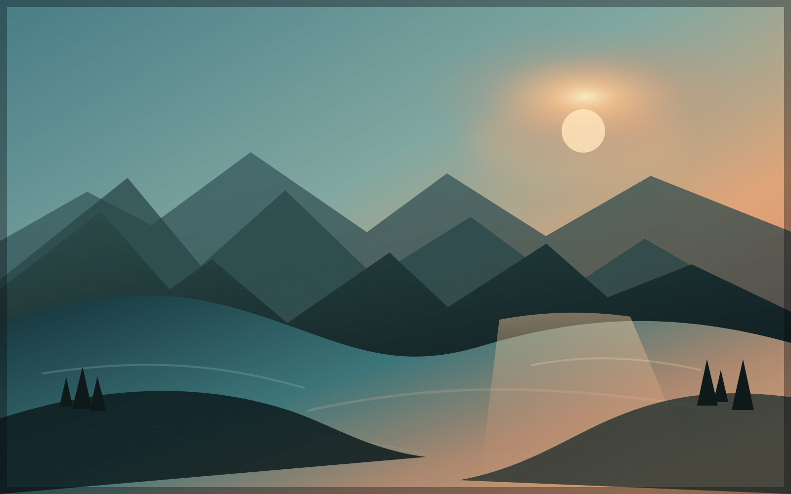

1.1 / 02
Review at your pace.
Choose 0.25×, 0.5×, 1×, 1.5×, 2× or 4×. The selected forward speed stays ready when you pause and resume.
0.25×0.5×1×1.5×2×4×
A purpose-built player for camera Log
Double-click Log footage and watch it the way it was meant to look—automatically, in real time, without creating a project or changing the original.

D-Log Rec.709Drag to compare
01No projects
02No exports
03No uploads
04Originals untouched
One job, done well
Everything between your file and normal colour happens during playback.
After a one-time Finder setup, double-click a video—or drag it onto the app or choose Open. MP4, MOV and M4V are welcome.
Camera metadata, codec and bit depth identify the Log profile. The active conversion stays visible.
A matching built-in ACES-based transform—or your installed compatible LUT—is applied in real time. The video file itself is never rewritten.
Available in version 1.1
Version 1.1 turns Log Video Player into a faster review tool—without turning it into an editor. These controls are available now in the free 1.1 app.
Pro Playback Controls1.1 / 01
Drag the new timeline and the playhead follows immediately. Hover to see the exact frame with the active camera transform, LUT and picture adjustments already applied.
1.1 / 02
Choose 0.25×, 0.5×, 1×, 1.5×, 2× or 4×. The selected forward speed stays ready when you pause and resume.
1.1 / 03
Use familiar review shortcuts without reaching for the controls.
The original video remains untouched. Preview frames stay in memory only and follow Original / Normal Colour mode.
Built for viewing—not editing
Adjust brightness, contrast, saturation, temperature and tint after Log conversion. Reset any control—or all five—instantly. The original file stays untouched.
Log Video Player inspects standard colour metadata and known camera signatures, then explains exactly what it applied. Search and switch profiles without stopping playback.
DJI Mavic 3
D-Log → Rec.709
No account, cloud processing, analytics or advertising. Playback is local, and your originals remain byte-for-byte untouched.
Toggle the transform at any time. When metadata is ambiguous, choose a profile once and the app remembers the camera signature.
Import a standard .cube LUT for a camera profile or a personal viewing look—without turning playback into a colour-grading session.
Camera compatibility
Built-in ACES-based Rec.709 viewing transforms cover the profiles marked below. Additional profiles use a one-time compatible LUT import.
Full D-Log · built in
Camera-specific D-Log / D-Log M · verified LUT import
Apple Log · built in
Apple Log 2 · LUT import
S-Log2 / S-Log3 · built in
Canon Log · LUT import
Log 2 / Log 3 · built in
V-Log / V-Gamut · built in
GoPro Log · LUT import
DJI profiles distinguish the Mavic 3 generation, Mavic 2 Pro / Air 2S, Mavic 4 Pro / Mini 5 Pro, Osmo Action 6, Phantom and Zenmuse families instead of treating every D-Log M file as identical. Built-in transforms are ACES-based viewing transforms; supported manufacturer profiles use a one-time verified .cube LUT import. Ambiguous files remain easy to choose manually. Rec.709, HLG and PQ footage passes through without an unnecessary Log transform.
Deliberately focused
Editors are excellent for making films. Log Video Player is for the moment before that—when you simply need to see what you captured.
It playsLog footage in normal colour
It identifiesThe active camera transform
It preservesEvery byte of the original
It does notEdit, grade, render or export
Log Video Player for Mac
Native, private and free on the Mac App Store.
Download free